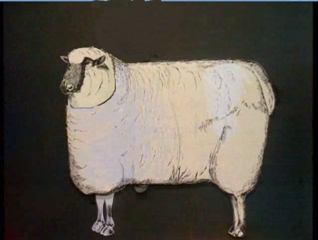
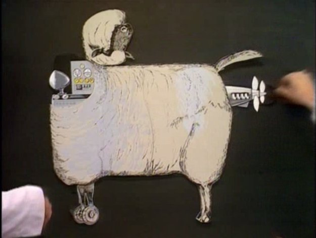

Cython é
Um exemplo rápido:
import math
def great_circle(lon1, lat1, lon2, lat2):
radius = 3956 #miles
x = math.pi/180.0
a = (90.0-lat1)*(x)
b = (90.0-lat2)*(x)
theta = (lon2-lon1)*(x)
c = math.acos((math.cos(a)*math.cos(b)) +
(math.sin(a)*math.sin(b)*math.cos(theta)))
return radius*c
import timeit
lon1, lat1, lon2, lat2 = -72.435, 34.323, -61.828, 54.826
num = 500000
t = timeit.Timer(("p1.great_circle(%f,%f,%f,%f)"
% (lon1,lat1,lon2,lat2)),
"import p1")
print "Pure python function", t.timeit(num), "sec"
Resultado: Pure python function 8.24502420425 sec
Mesmo código!
$ cython p1.py
$ gcc -O2 -c -fPIC -I/usr/include/python2.5/ p1.c
$ gcc -shared p1.o -o p1.so
Resultado: Pure python function, cythonized 7.77563095093 sec
Paciência, jovem Padawan =]
import math
def great_circle(float lon1, float lat1,
float lon2, float lat2):
cdef float radius = 3956.0
cdef float pi = 3.14159265
cdef float x = pi/180.0
cdef float a, b, theta, c
a = (90.0-lat1)*(x)
b = (90.0-lat2)*(x)
theta = (lon2-lon1)*(x)
c = math.acos((math.cos(a)*math.cos(b)) +
(math.sin(a)*math.sin(b)*math.cos(theta)))
return radius*c
cdef float radius = 3956.0
Resultado: Cython function (still using python math) 7.82765412331 sec
cdef extern from "math.h":
float cosf(float theta)
float sinf(float theta)
float acosf(float theta)
def great_circle(float lon1, float lat1,
float lon2, float lat2):
cdef float radius = 3959.0
cdef float pi = 3.14159265
cdef float x = pi/180.0
cdef float a, b, theta, c
a = (90.0 - lat1)*(x)
b = (90.0 - lat2)*(x)
theta = (lon2-lon1)*(x)
c = acosf((cosf(a)*cosf(b)) +
(sinf(a)*sinf(b)*cosf(theta)))
return radius*c
cdef extern from "math.h":
float cosf(float theta)
float sinf(float theta)
float acosf(float theta)
Resultado: Cython function (using trig function from math.h) 1.26355004311 sec

cdef extern from "math.h":
float cosf(float theta)
float sinf(float theta)
float acosf(float theta)
cdef float _great_circle(float lon1, float lat1,
float lon2, float lat2):
cdef float radius = 3959.0
cdef float pi = 3.14159265
cdef float x = pi/180.0
cdef float a, b, theta, c
a = (90.0 - lat1)*(x)
b = (90.0 - lat2)*(x)
theta = (lon2-lon1)*(x)
c = acosf((cosf(a)*cosf(b)) + (sinf(a)*sinf(b)*cosf(theta)))
return radius*c
Continua!
def great_circle(float lon1, float lat1,
float lon2, float lat2, int num):
cdef int i
cdef float x
for i from 0 <= i < num:
x = _great_circle(lon1,lat1,lon2,lat2)
return x
Evitamos unpacking dos argumentos a cada chamada de função
Resultado: Cython function (avoiding args unpacking) 0.578577041626 sec
O_o
#include <math.h>
#include <stdio.h>
#define NUM 500000
float great_circle(float lon1, float lat1,
float lon2, float lat2) {
float radius = 3956.0;
float pi = 3.14159265;
float x = pi/180.0;
float a, b, theta, c;
a = (90.0 - lat1)*(x);
b = (90.0 - lat2)*(x);
theta = (lon2-lon1)*(x);
c = acos((cos(a)*cos(b)) + (sin(a)*sin(b)*cos(theta)));
return radius*c;
}
int main(int argc, char** argv) {
int i;
float x;
for (i=0; i <= NUM; i++) {
x = great_circle(-72.345, 34.323, -61.823, 54.826);
}
return 0;
}
$ time ./c4
real 0m0.881s user 0m0.536s sys 0m0.000s
Pure python function 8.24502420425 sec Pure python function, cythonized 7.77563095093 sec Cython function (still using python math) 7.82765412331 sec Cython function (using trig function from math.h) 1.26355004311 sec Cython function (avoiding args unpacking) 0.578577041626 sec real 0m0.881s user 0m0.536s sys 0m0.000s
cdef extern from "Eet.h":
ctypedef enum Eet_Error:
EET_ERROR_BAD_OBJECT
ctypedef struct Eet_File
Eet_File* eet_open(char* file, Eet_File_Mode mode)
Eet_Error eet_close(Eet_File *ef)
char** eet_list(Eet_File *ef, char* glob, int *count_ret)
int eet_num_entries(Eet_File* ef)
cdef extern from "Python.h":
# stdlib.h
void free(void *ptr)
Tem bem mais que isso, mas esse subset vai servir no momento.
cdef class Eet:
cdef Eet_File *ef
def __init__(self, filename, mode):
self.ef = eet_open(filename, mode)
if self.ef == NULL:
raise EetError("Could not open file")
def __len__(self):
return eet_num_entries(self.ef)
def keys(self, glob="*"):
"""List all entries in eet file matching shell glob.
@parm glob A shell glob to match against. Default: "*"
@return list of entries matching shell glob.
@rtype list of str
"""
cdef int count_ret
cdef char** entry_list
entry_list = eet_list(self.ef, glob, &count_ret)
ret_list = []
for i from 0 <= i < count_ret:
ret_list.append(entry_list[i])
python.free(entry_list)
return ret_list
def close(self):
"""Close the eet file and flush any pending writes."""
cdef int ret_value
if self.ef:
ret_value = eet_close(self.ef)
if ret_value == EET_ERROR_BAD_OBJECT:
raise EetError("Bad Object")
self.ef = NULL
else:
raise EetError("File not open")
Suporte a C++ : Funciona, mas dá trabalho
Ainda faltam closures, então nada de generators por enquanto
Já suporta boa parte do Py3K
Documentação está começando a melhorar...
não significa que você DEVE fazer!
Quando usar?